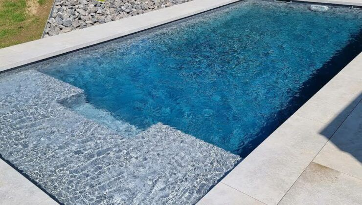
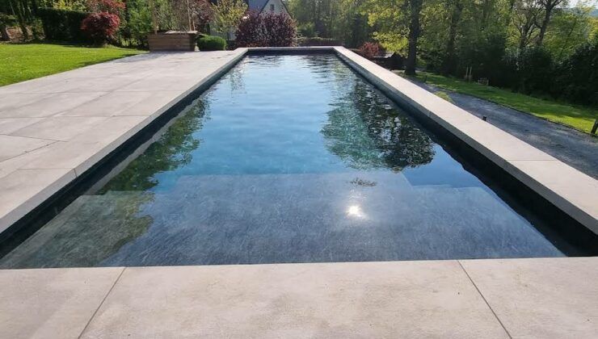
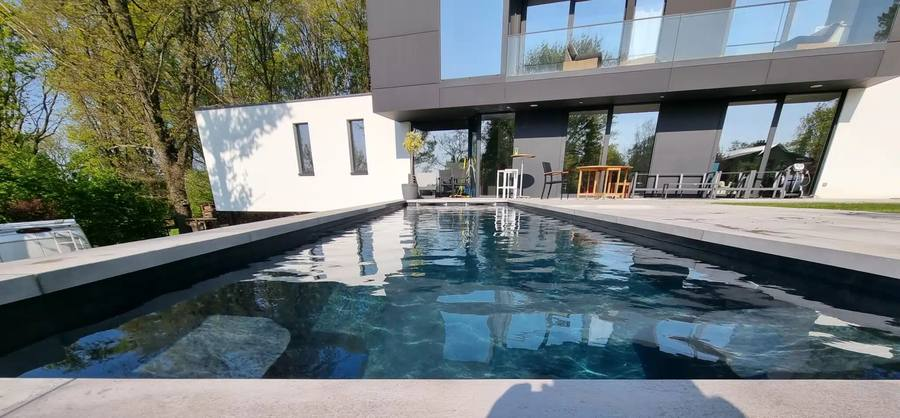
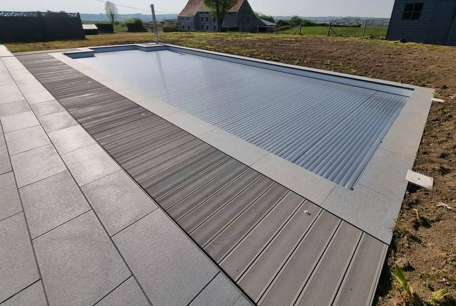

Construction de piscine sur mesure
Piscine familiale, avec vitrage ou à débordement : nous créons un espace de bien-être adapté à votre mode de vie.
Piscine Créative construit votre piscine sur mesure en Stepoc avec revêtement PVC armé : durable, esthétique et réalisée en seulement 4 semaines.
Un seul interlocuteur pour tout votre projet, de la conception à la réalisation, pour une construction neuve comme pour une rénovation.
Piscine familiale, avec vitrage ou à débordement : nous créons un espace de bien-être adapté à votre mode de vie.
Une structure robuste conçue pour résister aux intempéries, avec un revêtement facile à entretenir.
Redonnez vie à votre bassin existant avec une remise à neuf soignée et durable.
Pompes à chaleur, filtres et traitement de l’eau installés et réglés par nos soins.
Nous gérons tout, du terrassement à la pose des margelles. Vous gagnez du temps et profitez d’un résultat impeccable, sans tracas.
Nous écoutons votre projet et vous remettons un devis gratuit, adapté à votre budget.
Préparation du terrain et implantation du bassin.
Montage de la structure Stepoc, pose du revêtement PVC armé et des margelles.
Installation de la filtration, du traitement de l’eau et de la pompe à chaleur.
Une piscine valorise votre bien immobilier et offre des moments de détente chez vous. Avec plus de 15 ans d’expérience, nous nous engageons à réaliser des piscines robustes et esthétiques, dans le respect des délais et du budget convenus.
Chaque projet est unique : nous vous conseillons à chaque étape, avec une approche personnalisée.
Parler de mon projet
Découvrez quelques-unes de nos piscines : lignes épurées, finitions soignées et intégration au jardin.



Basés à Soumagne, nous intervenons dans toute la province de Liège et au-delà.
Grâce à notre expérience, nous réalisons votre projet en seulement 4 semaines.
Nous construisons des piscines en Stepoc avec un revêtement en PVC armé.
Oui, dans toute la province de Liège et au-delà.
Oui, il est gratuit et sans engagement.
Oui, nous réalisons des constructions neuves et des rénovations.
Parlons de votre projet de piscine à Soumagne ou ailleurs en province de Liège. Nous vous répondons rapidement.